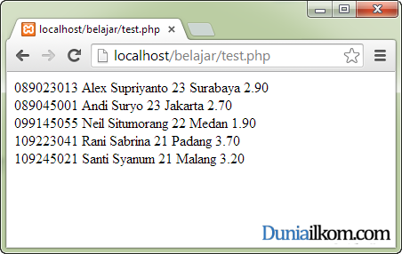

Tutorial PHP MySQL Part 7: Cara Menampilkan Tabel MySQL dari PHP (mysql_fetch_array)
Selain menggunakan fungsi mysql_fetch_row(), PHP juga menyediakan fungsi lain untuk menampilkan data dari MySQL, yakni fungsi mysql_fetch_array(). Dalam tutorial kali ini kita akan membahas cara penggunaan fungsi mysql_fetch_array(), dan perbedaanya dengan mysql_fetch_row().
Menampilkan Tabel MySQL dengan fungsi mysql_fetch_array
Fungsi mysql_fetch_array() pada dasarnya hampir sama dengan fungsi mysql_fetch_row(), namun fungsi mysql_fetch_array() memberikan alternatif cara menampilkan data MySQL dengan lebih mudah.
Jika dalam fungsi mysql_fetch_row() hasil fungsinya berupa array dengan key atau indexnya berupa angka, seperti : $row[1], $row[2] dan $row[3], maka di dalam mysql_fetch_array(), kita bisa menggunakan nama kolom dari tabel MySQL sebagai key atau index array seperti berikut ini: $row[‘nim’], $row[‘nama’] dan $row[‘umur’]. Cara penulisan seperti ini akan memudahkan pembuatan program.
Selain menggunakan nama kolom pada index array, fungsi mysql_fetch_array() juga bisa menggunakan index penomoran kolom seperti mysql_fetch_row(), atau bahkan keduanya sekaligus. Untuk mengatur fitur ini, fungsi mysql_fetch_array() membutuhkan parameter tambahan.
Berikut adalah format dasar penulisan fungsi mysql_fetch_array() dalam PHP:
$row= mysql_fetch_array($result,[’tipe_hasil’]) |
- $row adalah variabel yang akan menampung hasil fungsi mysql_fetch_array(). Hasil dari fungsi mysql_fetch_array() berupa tipe data array dengan key yang bergantung kepada konstanta ‘tipe_hasil’.
- $result adalah variabel hasil menjalankan query MySQL yang berasar dari fungsi mysql_query().
- ’tipe_hasil’ merupakan konstanta opsional yang digunakan untuk mengatur index array dari hasil fungsi mysql_fetch_array(). Konstanta yang bisa digunakan adalah salah satu dari ketiga nilai berikut: MYSQL_NUM, MYSQL_ASSOC atau MYSQL_BOTH. Jika argumen ini tidak ditulis, nilai defaultnya adalah MYSQL_BOTH.
Perbedaan mysql_fetch_array: MYSQL_NUM, MYSQL_ASSOC dan MYSQL_BOTH
Cara mengakses array dari fungsi mysql_fetch_array() bergantung kepada argumen ‘tipe_hasil’. Argumen ‘tipe_hasil’ hanya bisa berisi satu dari 3 konstanta: MYSQL_NUM, MYSQL_ASSOC atau MYSQL_BOTH.
Jika argumen keduadari fungsi mysql_fetch_array() diisi MYSQL_NUM, maka index array akan menjadi angka (sama seperti hasil mysql_fetch_row()), dan bisa ditampilkan seperti: $row[1], $row[2] dan $row[3].
Jika argumen kedua diisi MYSQL_ASSOC, index array akan menjadi nama kolom, dan bisa ditampilkan seperti: $row[‘nim’], $row[‘nama’] dan $row[‘umur’].
Opsi ketiga, jika argumen diisi MYSQL_BOTH maka index array mendukung 2 pemanggilan, yakni berupa angka dan nama kolom.
Sama seperti fungsi mysql_fetch_row(), mysql_fetch_row() hanya membaca 1 baris pada sekali pemanggilan. Jika tabel kita terdiri dari 5 baris, maka fungsi mysql_fecth_array() harus diulang sebanyak 5 kali (atau menggunakan metoda perulangan while seperti yang kita lakukan pada tutorial mysql_fetch_row().
Cara Penggunaan Fungsi mysql_fecth_array()
Agar lebih mudah dipahami, langsung saja kita masuk kedalam contoh kode program. Masih menggunakan contoh database universitas yang dibuat pada tutorial mysql_fetch_row(), kali ini saya akan menggunakan fungsi mysql_fetch_array() untuk menampilkan hasilnya.
Berikut adalah contoh penggunaan fungsi mysql_fetch_array() dalam PHP:
1
2
3
4
5
6
7
8
9
10
11
12
13
14
15 |
<?php//buat koneksi dengan MySQL$link=mysql_connect('localhost','root',''); //gunakan database universitas$result=mysql_query('USE universitas'); //tampilkan tabel mahasiswa_ilkom$result=mysql_query('SELECT * FROM mahasiswa_ilkom');while ($row=mysql_fetch_array($result, MYSQL_NUM)) { echo "$row[0] $row[1] $row[2] $row[3] $row[4]"; echo "<br />"; }?> |
Dalam contoh diatas, baris 1-6 merupakan kode program untuk membuat koneksi dengan MySQL. Pada baris ke-9, saya membuat query ‘SELECT * FROM mahasiswa_ilkom’ yang akan mengembalikan seluruh isi tabel mahasiswa_ilkom.
Jika diperhatikan, kode program diatas sama persis dengan contoh terakhir pada tutorial mysql_fetch_row(), hanya pada baris ke 10 saya menggantinya dengan fungsi mysql_fetch_array().
Konstanta MYSQL_NUM pada argumen ke-2 fungsi mysql_fetch_array(), menginstruksikan kepada PHP bahwa nilai kembalian untuk variabel $row adalah array dengan index angk, sehingga hasilnya sama persis dengan mysql_fetch_row() yang diakses dengan $row[0] untuk kolom pertama tabel, $row[1] untuk kolom kedua tabel, dan seterusnya.
Jika menggunakan konstanta MYSQL_NUM akan membuat fungsi mysql_fetch_array() sama dengan mysql_fetch_row(), bagaimana dengan MYSQL_ASSOC? Dalam contoh berikut, saya akan mengubah konstanta fungsi mysql_fetch_array() dengan MYSQL_ASSOC :
1
2
3
4
5
6
7
8
9
10
11
12
13
14
15
16 |
<?php//buat koneksi dengan MySQL$link=mysql_connect('localhost','root',''); //gunakan database universitas$result=mysql_query('USE universitas'); //tampilkan tabel mahasiswa_ilkom$result=mysql_query('SELECT * FROM mahasiswa_ilkom');while ($row=mysql_fetch_array($result,MYSQL_ASSOC)) { echo $row['nim']." ".$row['nama']." ".$row['umur']." "; echo $row['tempat_lahir']." ".$row['IPK']; echo "<br />"; }?> |
Pada contoh kali ini, pada baris ke-10, fungsi mysql_fetch_array() saya panggil dengan konstanta MYSQL_ASSOC sebagai argumen kedua. Dengan cara ini, hasil kembalian query, berupa array dengan index nama kolom dari tabel MySQL.
Karena menggunakan konstanta MYSQL_ASSOC, cara pengaksesan nilai $row harus menggunakan index nama kolom tabel. Jika di dalam MySQL nama kolom adalah ‘nim’, maka untuk menampilkan data kolom tersebut, kita menggunakan $row[‘nim’]. Jika di dalam MySQL nama kolom adalah ‘tempat_lahir’, untuk menampilkan data kolom tersebut, adalah dengan $row[‘tempat_lahir’], dan seterusnya.
Dengan cara ini, kita akan mudah untuk merancang tampilan tabel MySQL, terutama jika urutan kolom tidak ditampilkan secara berurutan.

1
2
3
4
5
6
7
8
9
10 |
<?//tampilkan tabel mahasiswa_ilkom$result=mysql_query('SELECT * FROM mahasiswa_ilkom');while ($row=mysql_fetch_assoc($result)) { echo $row['nim']." ".$row['nama']." ".$row['umur']." "; echo $row['tempat_lahir']." ".$row['IPK']; echo "<br />"; }?> |
Untuk pilihan konstanta terakhir: MYSQL_BOTH, MySQL akan mengembalikan nilai $row yang bisa diakses baik dengan index angka maupun dengan index nama kolom. Berikut adalah contoh kode programnya:
1
2
3
4
5
6
7
8
9
10
11
12
13
14
15
16 |
<?php//buat koneksi dengan MySQL$link=mysql_connect('localhost','root',''); //gunakan database universitas$result=mysql_query('USE universitas'); //tampilkan tabel mahasiswa_ilkom$result=mysql_query('SELECT * FROM mahasiswa_ilkom');while ($row=mysql_fetch_array($result,MYSQL_BOTH)) { echo $row[0]." ".$row['nama']." ".$row['umur']." "; echo $row[3]." ".$row['IPK']; echo "<br />"; }?> |
Seperti yang terlihat, saya membuat perintah $row[0] dan $row[‘nama’] dalam pemanggilan yang sama, dan PHP dapat menampilkan hasil sesuai dengan yang diharapkan.
Pada dasarnya, pengaksesan MySQL melalui PHP, hanya membutuhkan 3 fungsi utama, yakni mysql_connect(), mysql_query(), dan mysql_fecth_array(). Sampai disini, kita telah mempelajari ketiga fungsi penting tersebut.
Dalam tutorial selanjutnya, kita akan mempelajari cara menampilkan pesan error dari MySQL ketika query yang dijalankan tidak sesuai.
Sumber : http://www.duniailkom.com/tutorial-php-mysql-cara-menampilkan-tabel-mysql-dari-php-mysql_fetch_array/